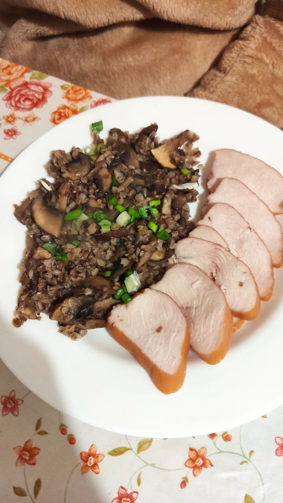

Soy sauce buckwheat

Description
Tasty buckwheat with fried mushrooms and soy sauce that will restore your faith in buckwheat!
Buckwheat has bad reputation for it's unpleasant taste. But that is only true if you cook it wrong! This buckwheat is sweat, sour, and not bitter, as well as quite heathy!
Ingredients
- Buckwheat (half a cup)
- Soy sauce (1/3 of a cup)
- Champignons (500 g)
- Green onion
- Butter
- Salt
- Onion (just 1)
- Olive oil
- Sugar (1 tsp)
- White wine (1 tbsp)
Steps
- Put buckwheat into a small pot, add a cup of water, and put it on high heat until it starts to boil. Then, reduce the heat to minimum and let it boil slowly until there's no water left. When done, add a piece of butter and some salt to taste.
- While buckwheat is boiling, cut the mushrooms and the onions into slices of about 1-2 mm thick.
- Put the frying pan on medium heat, add a splash of olive oil, and throw in the onions.
- After about 30 seconds, put in all the mushrooms and fry till all the liquid from them has evaporated (around 5-10 minutes).
- Drizzle over 1 tsp of sugar, then pour over soy sauce and white wine. Stir for a bit until most of the liquid has reduced.
- Add in all the buckwheat and mix carefully. Turn off the heat.
- Serve with chopped green onion on top and some protein on the side (for example, some cured chicken fillet).